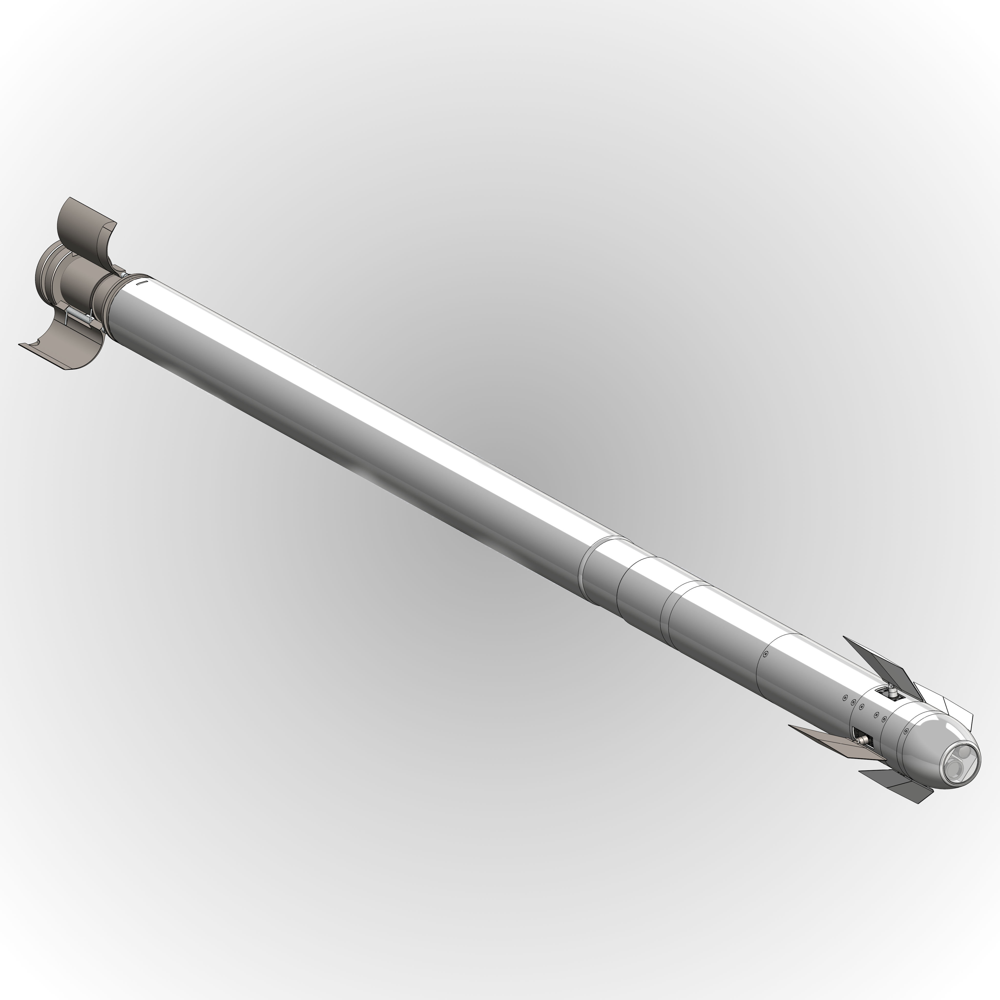
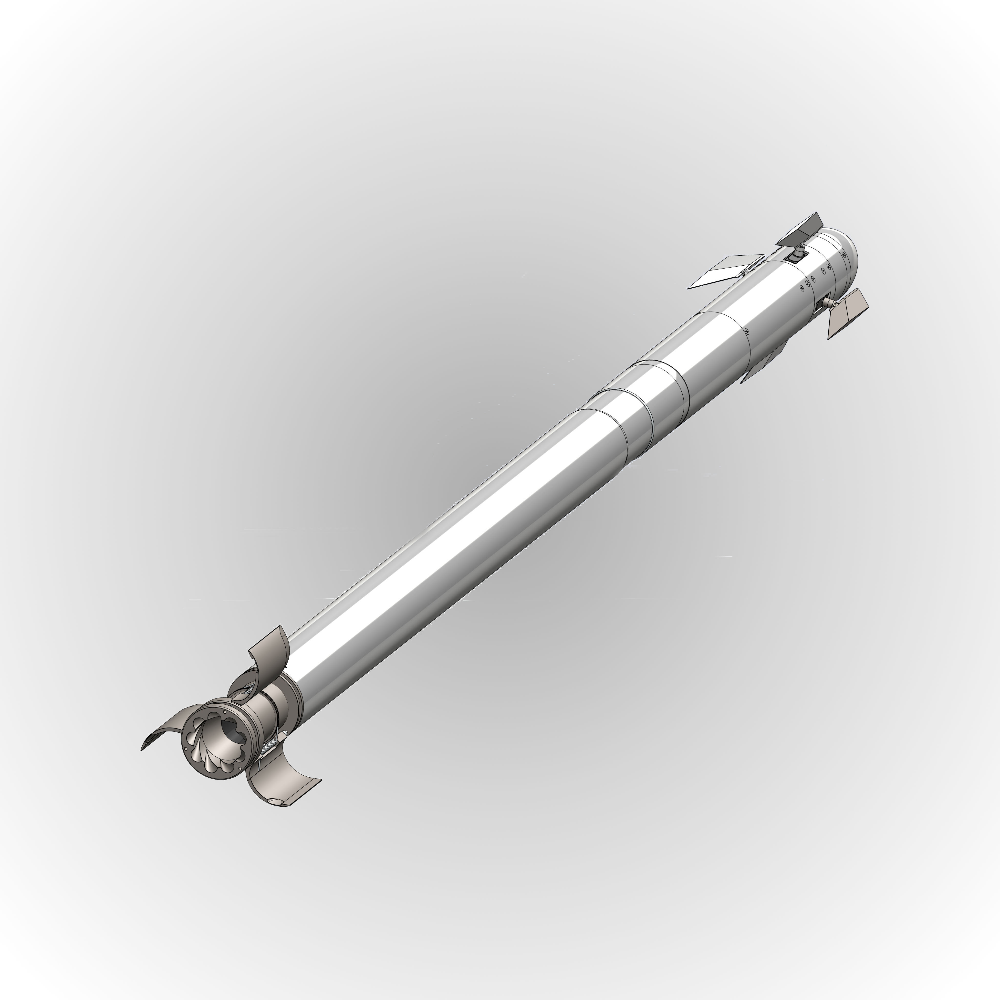
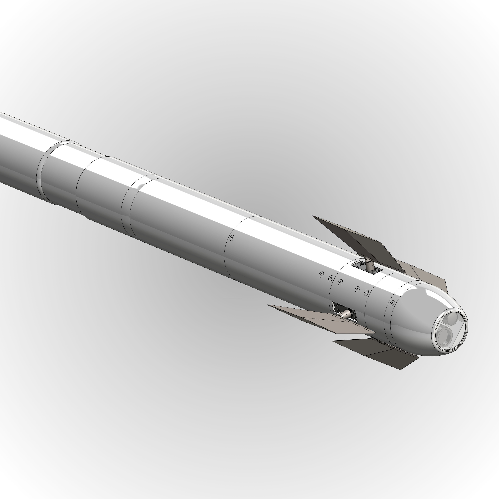
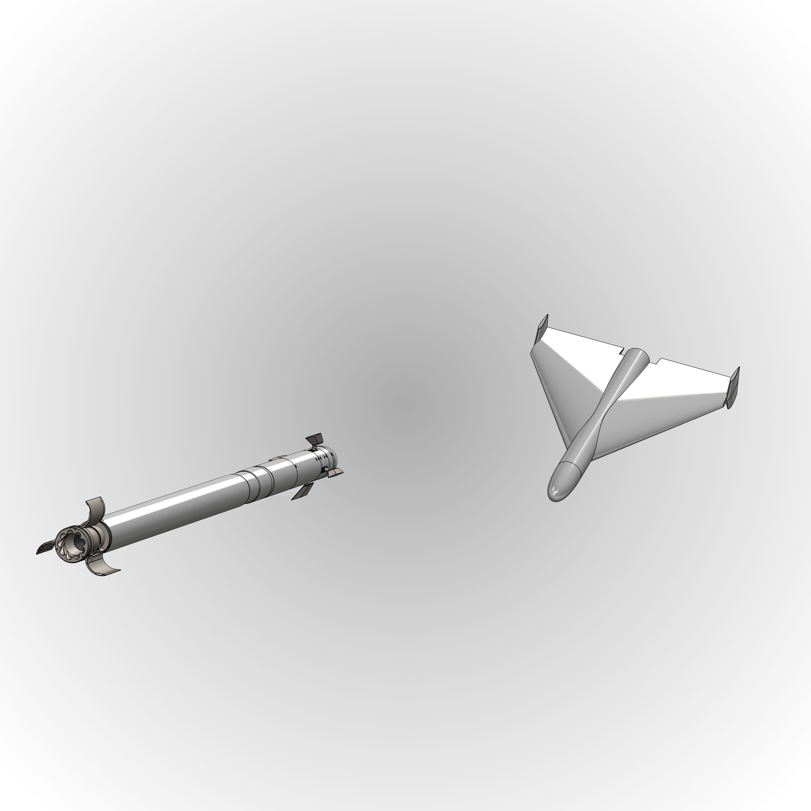

01
Small Guided Missile
SGM “SCION”
The SGM “Scion” is a guided missile based on the production-ready Hydra 70 platform, designed for mass deployment against small aerial targets.
The main approach involves using existing missile platforms with the addition of a guidance module, enabling a rapid transition from unguided to guided weapons without altering the production base.
The project is focused on creating a compact and scalable solution that can be deployed as part of a distributed system with minimal infrastructure and personnel requirements.
02
The Problem
Modern UAV countermeasure systems are characterised by a high cost per target and limited scalability.
At the same time, targets such as Shahed-type drones have a significantly lower cost, leading to the economically inefficient use of conventional missile solutions.
Furthermore, many systems require complex infrastructure, lengthy deployment times and a significant number of operators, which reduces their applicability in the event of mass attacks.
Consequently, there is a need for a simple, inexpensive and rapidly scalable means of engaging aerial targets.
03
Solution
The SGM “Scion” modernises the standard Hydra 70 rocket by installing a control module and implementing a combined guidance system.
- weight ~12 kg
- length ~1.6 m
- diameter 70 mm
- speed 200 m/s during the cruise phase
- flight time ~20 seconds
The missile operates on a two-stage scheme: coordinate guidance is used during the cruise phase, whilst autonomous guidance using optical and infrared channels is employed during the terminal phase.
Prior to launch, the missile receives target parameters; trajectory correction is possible during flight, and in the terminal phase the system operates autonomously without operator intervention.
04
Guidance module
The guidance module is a compact unit that can be mounted on a standard Hydra 70 missile without altering its basic design.
The module provides data reception prior to launch, trajectory control during the cruise phase, and a transition to autonomous guidance after target acquisition.
The module’s design is geared towards mass production, simple integration and compatibility with existing missile platforms.
05
Application
The system is designed to engage small-sized aerial targets at ranges of up to 20 km at minimal cost of operation.
- ground-based platforms.
- airborne platforms.
- maritime unmanned systems.
The use of off-the-shelf components and existing missile platforms reduces the cost of a single missile to approximately USD 10,000.